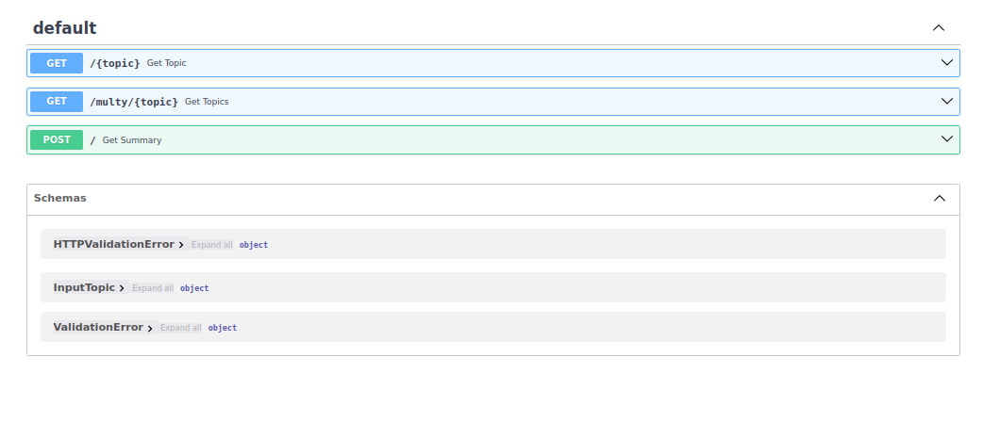
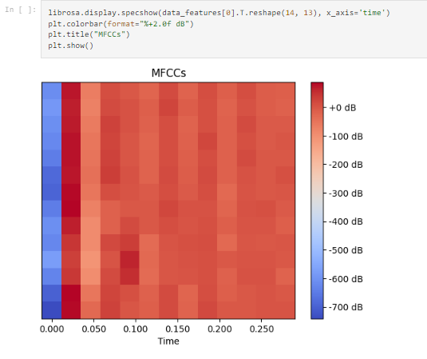
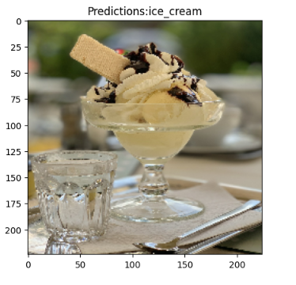
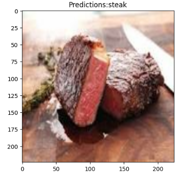

Визитка
About me

- Full name: Maslov Maxim Stanislavovich
- Age: 18 years old
- Location: Russia, Moscow
- Specialization: ML engineer
- Education: MTUCI (2023 - current)
Technical skills
- Programming languages/SQL: Python, Postgres, MySQL
- Stack: NumPy, pandas, matplotlib, seaborn, sklearn, tensorflow(keras), pytorch, optuna, pyspark, docker
Soft skills
Languages: Russian - native, English - B2
Social medias:
- FastAPI & wikipedia.
- First university VvIT laboratory task. It's a small web application, which shows various wikipedia api functions.
- 
- Voice verification (Repo temporary closed).
- This project not finished yet, as soon as it is ready, I'll make repo public, stay for updates.
- 
- Image food classification.
- One of the first my computer vision projects. It's a model based on VGG16. Model predication accuracy is about 80% on 10 classes data.
 